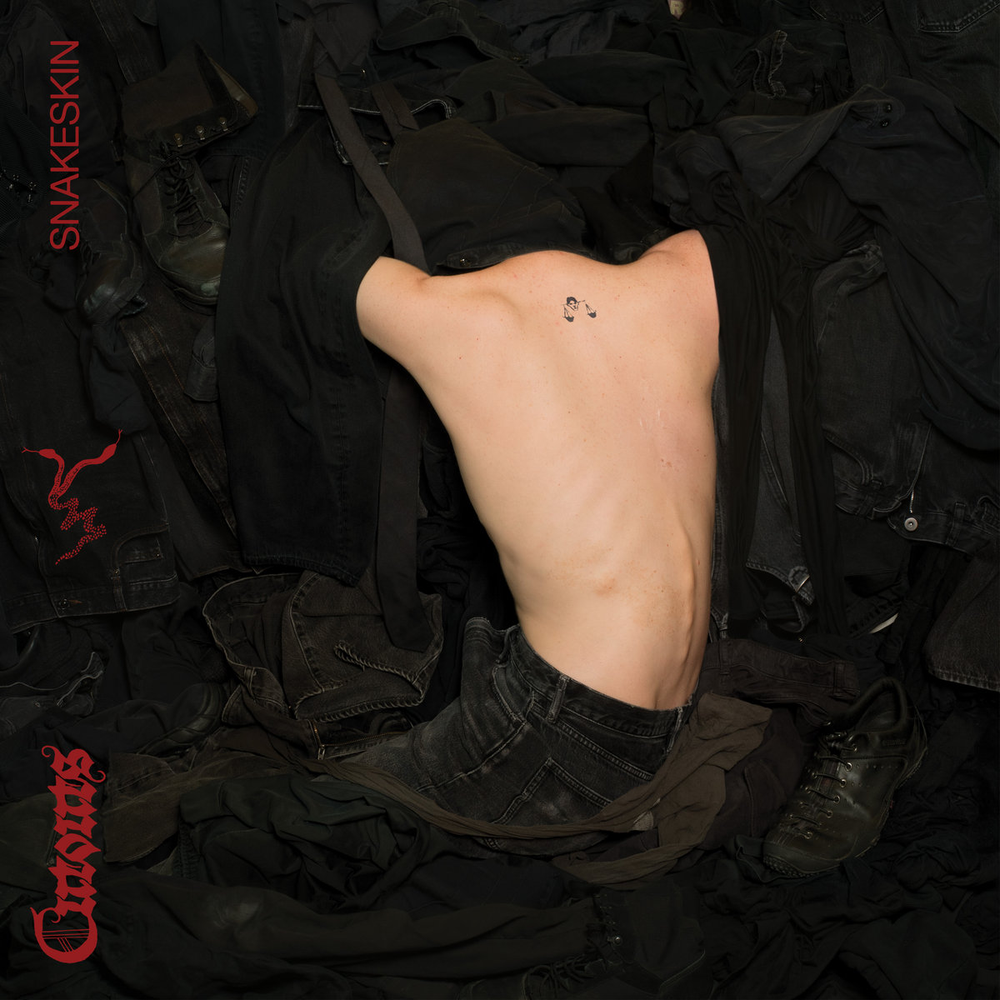
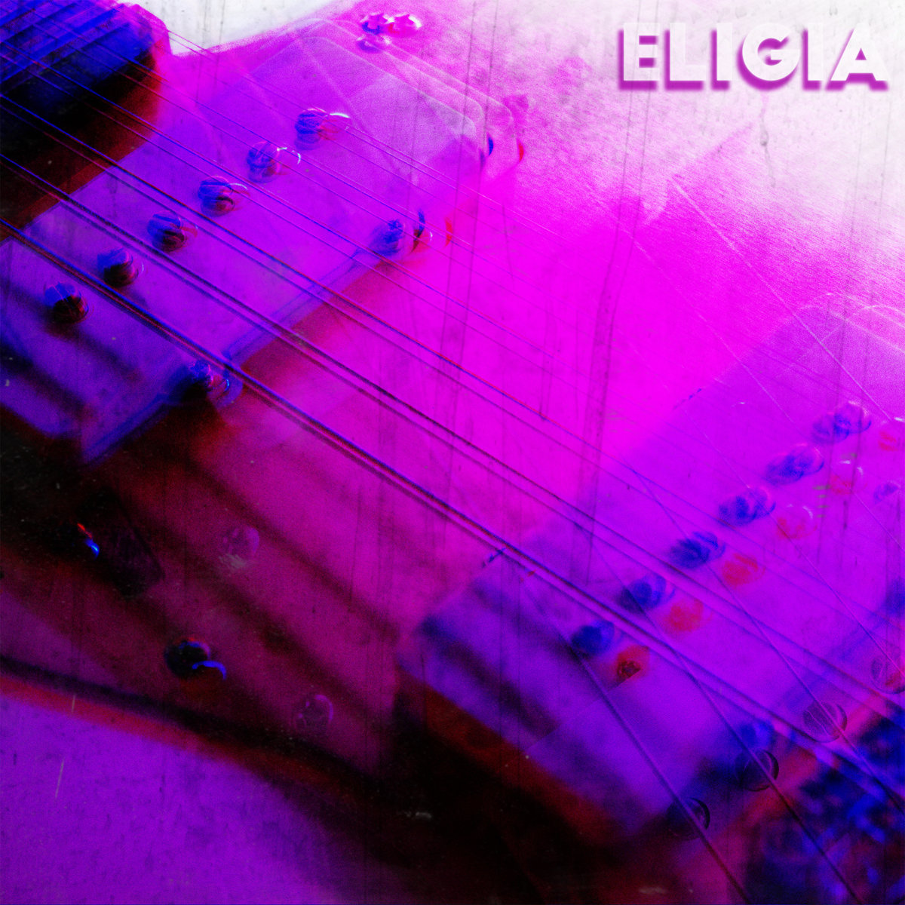
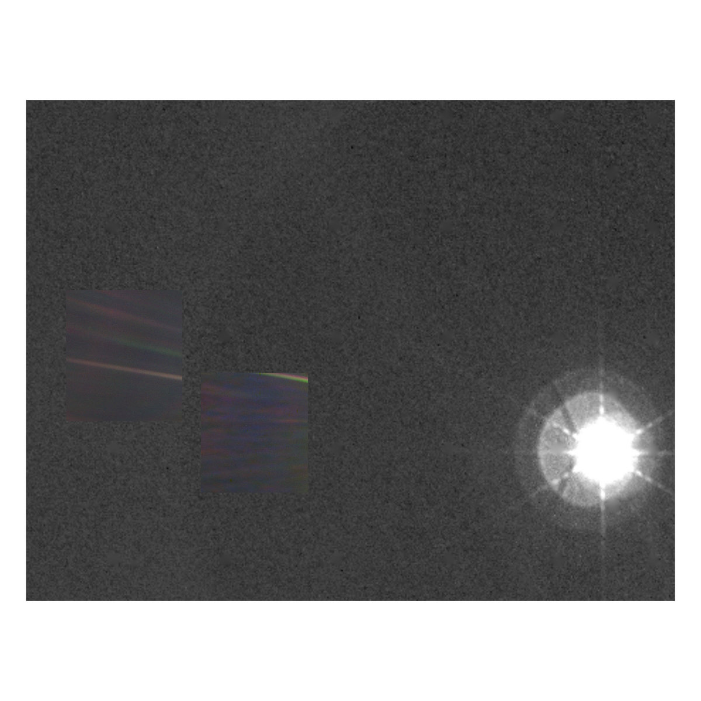
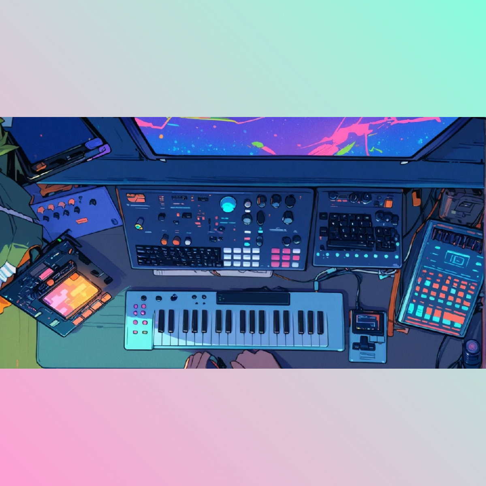

Bandcamp Friday is May 2nd, 2025. I always like to use these opportunities to both find/support Creative Commons music and thought I'd start sharing some of my picks.
If you're interested in CC music, be sure to checkout the tool I made for finding CC music on BC: cc-bc.

Dark yet catchy, Snakeskin melds drum machines and synthesizers with guitars and silky vocals to create danceable, industrial-tinged post-punk.

Reminds me of lofi version of The Cure or The Feelies if they had made shoegaze. Eligia layers nervous vocals over swirling guitars over upbeat drums.

A fun find, Daylight puts vocals that sound like they could easily fit on a Nashville pop country song on top of dreamy electronica. Introspective music to bob your head to.

Glitchy but chill, Collage is the perfect music for driving a convertible by the beach on an alien planet in the year 3025.